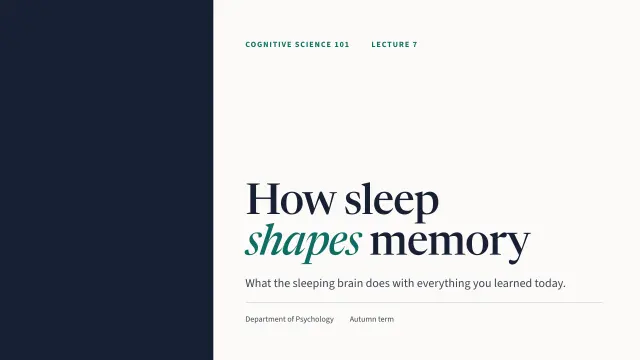
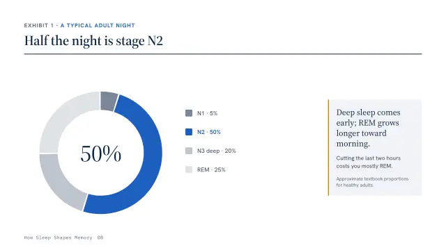
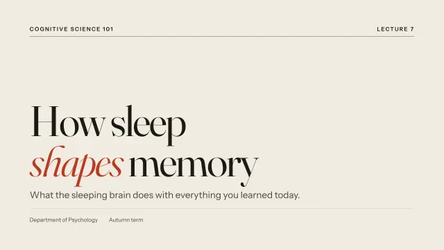
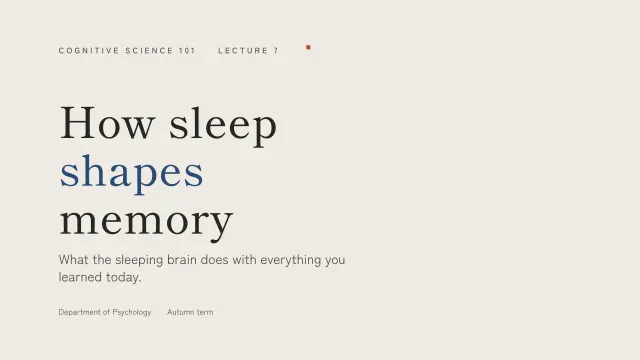

Research talks where every slide makes one claim.
Decklume structures your talk as an argument: question, gap, method, results, contribution. Each result slide states its finding as the headline and backs it with a chart drawn from your data.
/plugin install decklume@decklume 

What you can make
Copy a prompt, change the details, paste it into Claude Code.
- Thesis and dissertation defenses
Build a 20-minute PhD defense from my abstract and chapter summaries, with backup slides for likely committee questions.- Conference talks
Make a 12-minute conference talk from paper.pdf, speaker-led, with the main result as a single big-number slide.- Lab meetings
Turn this week's results.csv into a 6-slide lab-meeting update with one chart per finding.- Poster-to-talk
Turn my poster content into a 5-minute lightning talk in the Ma theme.
Why it works for researchers
- Assertion headlines
- Results slides lead with the finding itself, such as "Recall improves after a night of sleep", rather than a label like "Results".
- Charts from your numbers
- Bar, line and donut charts drawn from data attributes, highlighting the value your claim is about.
- Numbered exhibits
- The Atlas theme numbers every chart and table automatically, as in a report.
- Handouts that stay small
- Vector PDFs keep text selectable; the 30-slide example lecture exports to 1.1 MB.
Themes to start with



See a finished example
Thesis defense: A master's defense that cites real prior work with a fictional study whose data are labelled illustrative.
Questions
Can I use my own data for charts?
Yes. Charts are declared with your labels and values and drawn as SVG in the theme's colours. Claude never invents data for them.
Does it support equations?
Yes. Slides accept native MathML, which modern browsers render without extra libraries.
Can I cite sources on slides?
Every chart, number and quote layout has a source line, and the skill is instructed never to fabricate citations.
How do I share slides with a committee?
Export a vector PDF with selectable text, or deploy a link that works on any device.